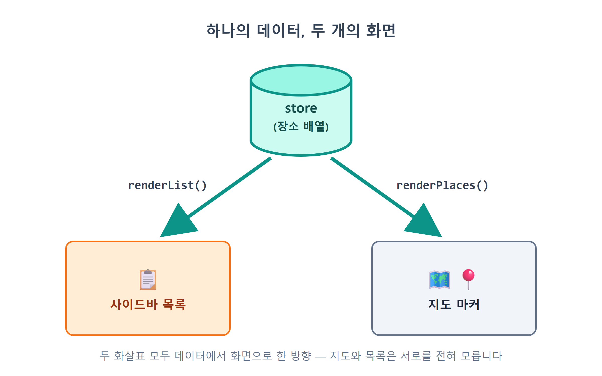
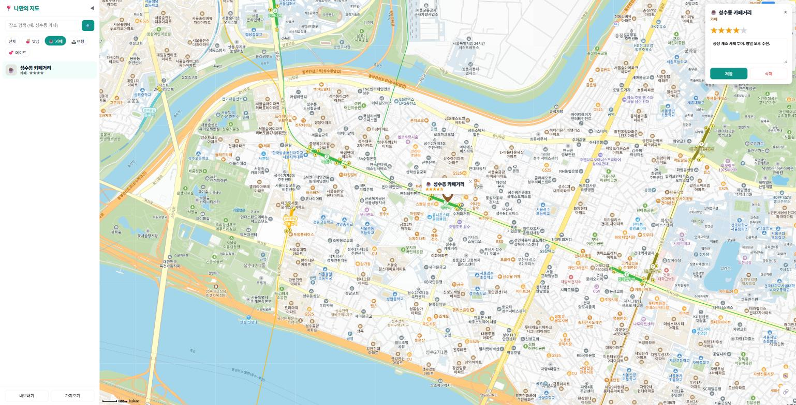
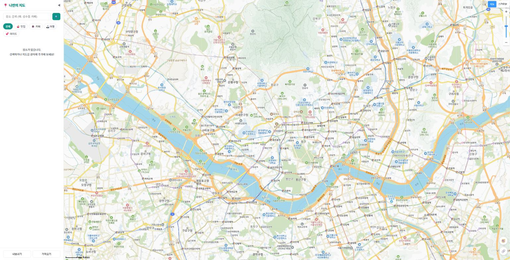
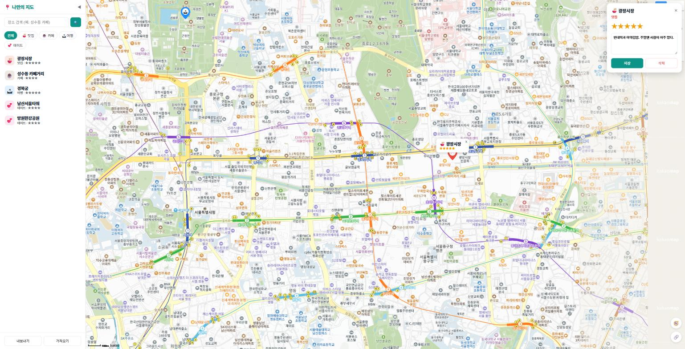
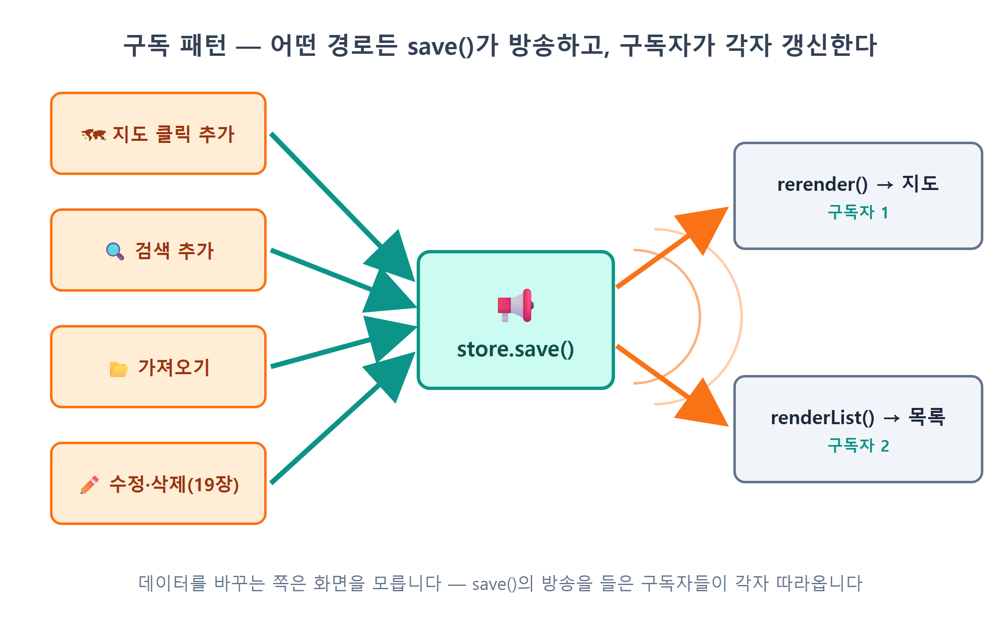

18장 사이드바 장소 목록¶
이 장에서 배우는 것
- 배열의
map()과join()으로 데이터 배열을 HTML 목록으로 바꾸는 정석 패턴을 익힙니다 - 목록 항목을 클릭하면 지도가 그 장소로 날아가 말풍선을 여는
focusPlace()연동을 만듭니다 - 데이터가 바뀌면 화면이 저절로 갱신되는 구독(subscribe) 패턴을 완성합니다
- 목록이 비었을 때 사용자를 안내하는 빈 상태(empty state) UI를 배웁니다
17장까지 오면서 우리 앱은 어느새 "진짜 앱"의 꼴을 갖췄습니다. 지도를 클릭하거나 검색해서 장소를 추가할 수 있고, 추가한 장소는 localStorage에 저장되어 새로고침해도 사라지지 않습니다. 그런데 며칠 쓰다 보면 묘한 답답함이 생깁니다. "내가 지금까지 저장한 장소가 몇 개더라? 지난주에 넣어 둔 그 카페 이름이 뭐였지?" 답을 알려면 지도를 이리저리 끌고 다니며 핀을 하나씩 눌러 봐야 합니다. 지도는 어디에 있는지를 보여주는 데는 최고지만, 무엇이 있는지를 훑어보는 데는 영 서툴거든요.
카카오맵 앱을 열어 보세요. 지도 옆이나 아래에 항상 목록이 함께 있습니다. 음식점을 검색하면 왼쪽엔 이름·별점·주소가 줄줄이 나오는 리스트, 오른쪽엔 핀이 찍힌 지도가 나란히 서고, 목록을 클릭하면 지도가 그리로 움직입니다. 지도와 목록은 같은 데이터를 두 가지 방식으로 보여주는 단짝입니다. 이번 장에서 우리 앱에도 이 단짝을 만들어 줍니다.
그리고 이 장에는 보너스가 하나 있습니다. 17장에서 store.js를 읽을 때 "18장의 예고편"이라며 미뤄 둔 수수께끼의 코드, 기억하시나요? 텅 빈 명단 listeners 배열과, save() 끝에서 그 명단을 향해 헛방송을 하던 forEach 한 줄 말입니다. 오늘 그 명단에 드디어 이름이 올라갑니다. 이름하여 구독 패턴 — 데이터가 바뀌는 순간 지도와 목록이 알아서 동시에 갱신되게 만드는, 이 앱 구조의 마지막 퍼즐 조각입니다. 16장에서 "추가했으면 직접 알려라"라며 손으로 놓았던 notifyChange 임시 다리도 오늘 이 패턴으로 승격되면서 우아하게 철거됩니다.
18.1 목록도 상태의 그림자다¶
새 기능이지만 설계는 새로 할 것이 없습니다. 14장에서 세운 원칙을 그대로 한 번 더 적용하면 되거든요. 진실은 상태에 있고, 화면은 상태의 그림자다. 지도 위의 마커들이 store의 장소 배열을 그린 결과물이었듯, 사이드바의 목록도 같은 배열을 다른 모양으로 그린 결과물일 뿐입니다.

그림 18.1의 구조에서 눈여겨볼 점은 지도와 목록이 서로를 전혀 모른다는 것입니다. 목록이 지도에게 "나 갱신했으니 너도 갱신해"라고 말하지 않습니다. 둘 다 그저 store만 바라보고, store가 바뀌면 각자 자기 화면을 다시 그립니다. 초보 시절에 흔히 저지르는 실수가 "장소를 추가하는 코드에서 지도도 고치고, 목록도 고치고, 개수 표시도 고치고…" 하는 식으로 화면 조각들을 일일이 챙기는 것인데, 화면 조각이 하나 늘 때마다 고칠 곳이 늘어나 금방 지옥이 됩니다. 우리는 반대로 갑니다. 데이터를 바꾸는 쪽은 데이터만 바꾸고, 화면들은 각자 알아서 따라오게 합니다. 그 "알아서 따라오게" 하는 장치가 이 장 후반의 구독 패턴입니다.
목록이 그려질 자리부터 마련합시다. 지금 index.html의 사이드바에는 목록을 담을 태그가 아직 없으니, 필터 바 아래에 빈 <ul> 하나를 추가하는 것으로 이 장을 시작합니다.
🗣 이렇게 시키세요
index.html 사이드바의 필터 바(#filter-bar) 바로 아래에 장소 목록이 들어갈 빈 ul을 추가해줘. id는 place-list로 하고, 내용은 자바스크립트로 채울 거니까 비워둬.
Claude Code가 index.html에 추가한 마크업입니다. 필터 바와 17장에서 만든 내보내기/가져오기 푸터 사이, 딱 한 줄입니다.
<button class="filter-btn" data-category="date">💕 데이트</button>
</nav>
<ul id="place-list"></ul> <!-- ← 오늘 추가된 목록 자리 -->
<footer id="sidebar-footer">
저장하고 새로고침해도 화면에는 아무 변화가 없습니다. 당연합니다. 빈 <ul>은 눈에 보이지 않으니까요. 이 텅 빈 그릇을 채우는 것이 오늘 할 일입니다.
18.2 map과 join — 배열을 HTML로 바꾸는 정석¶
Claude Code에게 일을 시켜 봅시다. 원하는 목록의 생김새를 구체적으로 말하는 것이 포인트입니다.
🗣 이렇게 시키세요
sidebar.js에 renderList() 함수를 만들어서 #place-list에 장소 목록을 그려줘. 필터가 적용된 장소들(filteredPlaces)을 대상으로 하고, 항목마다 카테고리 이모지(카테고리 색을 연하게 깐 동그란 배경), 장소 이름(굵게), 카테고리 이름과 별점(★ 반복, 작은 회색 글씨)을 보여줘. 각 li에는 data-id로 장소 id를 달아줘. 장소 이름은 escapeHtml로 감싸는 것 잊지 말고. 장소가 하나도 없으면 "장소가 없습니다. 검색하거나 지도를 클릭해 추가해 보세요!"라는 안내 문구를 보여줘.
Claude Code가 sidebar.js에 추가한 renderList()입니다. 이 장의 심장이니 천천히 읽어 봅시다.
import { store } from './store.js';
import { categoryOf } from './categories.js';
import { escapeHtml } from './mapView.js';
export function renderList() {
const ul = document.getElementById('place-list');
const places = filteredPlaces();
if (places.length === 0) {
ul.innerHTML = '<li class="empty">장소가 없습니다.<br>검색하거나 지도를 클릭해 추가해 보세요!</li>';
return;
}
ul.innerHTML = places
.map((p) => {
const cat = categoryOf(p.category);
const stars = '★'.repeat(p.rating || 0);
return `
<li class="place-item" data-id="${p.id}">
<span class="place-emoji" style="background:${cat.color}22">${cat.emoji}</span>
<span class="place-info">
<strong>${escapeHtml(p.name)}</strong>
<small>${cat.label} ${stars ? '· ' + stars : ''}</small>
</span>
</li>`;
})
.join('');
}
핵심 구조는 단 세 단계입니다. 배열 → map()으로 HTML 문자열 배열 → join('')으로 하나의 큰 문자열 → innerHTML에 대입. 자바스크립트로 목록을 그리는 가장 유명한 관용구라서, AI에게 "배열을 목록으로 그려줘"라고 시키면 열에 아홉은 이 모양의 코드가 나옵니다. 하나씩 뜯어 봅시다.
map() — 14장에서 배운 filter()의 형제입니다. filter()가 시험을 통과한 요소만 골라내는 체라면, map()은 모든 요소를 다른 모습으로 변신시키는 공장입니다. 요소 수는 그대로 유지하면서, 각 요소에 함수를 적용한 결과로 새 배열을 만듭니다. 콘솔에서 감을 잡아 보세요.
장소 객체 배열이 들어가서 <li>...</li> 문자열 배열이 되어 나옵니다. 데이터가 화면 조각으로 변신하는 순간이죠.
join('') — map()이 돌려준 것은 아직 문자열의 배열입니다. innerHTML에는 배열이 아니라 문자열 하나를 넣어야 하므로, join('')으로 배열의 모든 요소를 이어 붙여 긴 문자열 하나로 만듭니다. 괄호 안의 ''는 "이어 붙일 때 사이에 아무것도 끼우지 말라"는 뜻입니다. 이걸 빼먹고 join()이라고만 쓰면 기본 구분자인 쉼표가 끼어들어서, 목록 항목 사이마다 정체불명의 쉼표가 찍히는 우스운 화면이 됩니다. AI가 짠 코드를 검토할 때 한 번쯤 확인해 볼 만한 지점입니다.
백틱(`) 문자열 — <li>...</li> 부분을 감싼 것은 따옴표가 아니라 백틱입니다. 템플릿 리터럴1이라고 부르는 이 문법은 두 가지 특권이 있습니다. 문자열 안에서 줄바꿈을 마음껏 할 수 있고, ${...} 자리에 변수나 표현식을 끼워 넣을 수 있습니다. HTML 조각을 만들 때 이만한 도구가 없죠. ${p.id}, ${cat.emoji}, ${escapeHtml(p.name)}이 전부 이 문법입니다.
data-id="${p.id}" — 14장의 필터 버튼에서 만난 데이터 속성이 다시 등장했습니다. 각 <li>에 자기가 어떤 장소를 나타내는지 이름표를 달아 두는 것입니다. 잠시 뒤 클릭 처리에서 "어느 항목이 눌렸는가"를 알아내는 열쇠가 됩니다.
'★'.repeat(p.rating || 0) — 문자열의 repeat() 메서드는 문자열을 주어진 횟수만큼 반복합니다. 별점이 3이면 '★★★'가 되죠. 뒤에 붙은 || 0은 방어 코드입니다. 아직 별점을 매기지 않은 장소는 rating이 undefined일 수 있는데, undefined를 repeat()에 넣으면 에러가 납니다. || 0은 "값이 없으면 0으로 치라"는 안전장치입니다. 그리고 목록 쪽 템플릿의 ${stars ? '· ' + stars : ''}는 별이 하나라도 있을 때만 가운뎃점과 함께 표시하는 잔손질입니다. 별점 0개짜리 장소에 점만 덩그러니 찍히는 것을 막는 거죠. 이런 한 끗이 UI의 완성도를 만듭니다.
escapeHtml(p.name) — 13장과 15장에서 약속한 규칙, "사용자가 입력했을 수 있는 문자열을 innerHTML에 넣을 땐 반드시 이스케이프"가 여기서도 지켜지고 있습니다. 16장부터 장소 이름은 사용자가 직접 입력한 값입니다. 이 규칙이 왜 목숨줄인지는 예고대로 19장에서 XSS라는 이름과 함께 파헤칩니다.
style.css에는 목록 스타일이 추가됐습니다.
#place-list { list-style: none; flex: 1; overflow-y: auto; padding: 4px 8px; }
.place-item {
display: flex; align-items: center; gap: 10px;
padding: 10px; border-radius: 10px; cursor: pointer;
}
.place-item:hover { background: #f0fdfa; }
#place-list의 flex: 1과 overflow-y: auto 조합이 실속 있는 부분입니다. 사이드바 안에서 남는 세로 공간을 목록이 전부 차지하되, 장소가 많아져 넘치면 목록 안에서만 스크롤이 생깁니다. 사이드바 전체가 밀려 내려가지 않죠. cursor: pointer와 :hover 배경색은 "이거 클릭할 수 있어요"라는 무언의 신호입니다. 아직 클릭 기능을 달기 전이지만, AI가 다음 단계를 내다보고 미리 깔아 둔 셈입니다.
저장하고 확인해 봅시다. main.js에서 initSidebar()가 호출될 때 renderList()도 한 번 실행되도록 연결되어 있다면(잠시 뒤 전체 코드에서 확인합니다), 사이드바 필터 바 아래로 장소들이 카드처럼 줄지어 나타납니다.

목록이 떴으니 14장의 필터 버튼과도 이어 줄 차례입니다. 지금 ☕ 카페를 눌러 보면 지도는 걸러지는데 목록은 그대로일 겁니다. 14장의 클릭 핸들러가 지도 갱신 콜백(onFilterChange)만 부를 뿐, 오늘 태어난 renderList()의 존재를 아직 모르기 때문이죠. 14장에서 "18장에서 목록 갱신 한 줄이 추가된다"고 예고했던 바로 그 한 줄을 지금 넣습니다.
🗣 이렇게 시키세요
sidebar.js의 필터 버튼 클릭 핸들러에서, active 클래스를 옮긴 다음에 renderList()도 호출해줘. 필터가 바뀌면 지도뿐 아니라 목록도 현재 필터에 맞게 다시 그려지게.
initSidebar()의 필터 부분이 이렇게 바뀝니다. 추가된 것은 renderList() 한 줄뿐입니다.
document.querySelectorAll('.filter-btn').forEach((btn) => {
btn.addEventListener('click', () => {
currentFilter = btn.dataset.category;
document.querySelectorAll('.filter-btn').forEach((b) => b.classList.toggle('active', b === btn));
renderList(); // ← 오늘 추가: 내 화면(목록)은 직접 다시 그린다
onFilterChange(); // 남의 화면(지도)은 여전히 main.js의 콜백에게
});
});
주석 두 줄이 14장에서 예고한 구분 그대로입니다. 목록은 sidebar.js 자신의 화면이니 콜백 없이 직접 부르고, 지도는 여전히 콜백 너머 조립 담당 main.js의 몫입니다. 모듈의 경계는 그대로인 채 한 줄만 늘어난 것이죠.
이제 필터 버튼을 눌러 보세요. renderList()가 store.all()이 아니라 filteredPlaces()를 데이터원으로 삼았기 때문에, ☕ 카페를 누르면 지도의 마커와 사이드바의 목록이 함께 카페만 남습니다. 필터라는 상태 하나를 두 화면이 공유하는, 단방향 구조의 힘이 눈에 보이는 순간입니다.

18.3 빈 목록에도 할 말이 있다¶
renderList() 앞부분의 if (places.length === 0) 분기를 다시 봅시다. 장소가 하나도 없으면 목록 대신 안내 문구를 보여주고 곧바로 return으로 함수를 끝냅니다.
if (places.length === 0) {
ul.innerHTML = '<li class="empty">장소가 없습니다.<br>검색하거나 지도를 클릭해 추가해 보세요!</li>';
return;
}
"장소가 없으면 그냥 아무것도 안 그리면 되는 것 아닌가?" 싶을 수 있습니다. 기능만 보면 맞는 말입니다. 하지만 사용자 입장에서 상상해 보세요. 처음 앱을 연 사람, 혹은 필터를 눌렀더니 결과가 0개인 사람 앞에 그냥 하얀 여백만 있다면 어떤 생각이 들까요? "고장 났나?" "로딩 중인가?" 텅 빈 화면은 침묵이고, 침묵은 사용자를 불안하게 합니다.
그래서 잘 만든 앱들은 비어 있는 화면을 그냥 두지 않습니다. 이것을 빈 상태(empty state) 디자인이라고 부릅니다. 좋은 빈 상태 문구는 두 가지를 말해 줍니다. 첫째, 지금 상황("장소가 없습니다" — 고장이 아니라 원래 빈 것임). 둘째, 다음 행동("검색하거나 지도를 클릭해 추가해 보세요!" — 이걸 채우려면 뭘 하면 되는지). 우리 문구가 정확히 이 두 문장으로 이루어져 있죠. 카카오톡의 "친구와 대화를 시작해 보세요", 메일 앱의 "받은 편지함이 비어 있어요" 같은 문구가 전부 같은 원리입니다.
.empty { text-align: center; color: var(--muted); padding: 40px 10px; font-size: 14px; line-height: 1.7; }
스타일도 의도가 있습니다. 흐린 색(--muted)과 넉넉한 여백으로 "이건 데이터가 아니라 안내문"임을 시각적으로 구분합니다. 진짜 목록 항목처럼 진하게 그리면 사용자가 클릭하려 들 테니까요.
확인해 봅시다. 필터에서 결과가 0개가 되게 만들면 됩니다. 예를 들어 아직 데이트 장소를 하나도 추가하지 않았다면 💕 데이트 필터를 눌러 보세요. 또는 19장을 미리 맛보는 셈 치고, 개발자도구 콘솔에서 localStorage.clear()를 입력하고 새로고침하면 저장된 장소가 모두 사라져 완전한 빈 목록을 볼 수 있습니다(17장에서 만든 내보내기로 백업해 두셨죠? 가져오기로 언제든 복구할 수 있으니 겁내지 않아도 됩니다).

💡 팁
빈 상태는 목록만의 문제가 아닙니다. 검색 결과가 0건일 때, 이미지를 불러오는 중일 때, 네트워크가 끊겼을 때 — 화면이 "정상 데이터"가 아닌 모든 순간이 디자인 대상입니다. AI에게 화면을 시킬 때 "비었을 때/실패했을 때는 이렇게 보여줘"까지 말해 주는 습관을 들이면, 앱의 완성도가 눈에 띄게 달라집니다. 프롬프트에 예외 상황 한 줄을 얹는 것, 그게 프로와 아마추어 화면의 차이를 만듭니다.
18.4 목록 클릭 → 지도가 날아간다¶
이제 목록과 지도를 잇습니다. 목표는 카카오맵과 같은 경험입니다. 목록에서 "광장시장"을 클릭하면 지도가 광장시장으로 미끄러지듯 이동하고, 확대되면서, 말풍선까지 활짝 열리는 것.
🗣 이렇게 시키세요
목록 항목을 클릭하면 지도가 그 장소로 이동하게 해줘. renderList에서 각 항목에 클릭 이벤트를 달아서 data-id를 콜백으로 넘기고, main.js에서는 그 id로 store에서 장소를 찾아 mapView의 focusPlace를 호출해줘. focusPlace는 지도를 레벨 4로 확대하면서 panTo로 부드럽게 이동하고, 그 장소의 말풍선을 열어줘.
renderList()의 끝에 코드가 몇 줄 붙었습니다.
ul.querySelectorAll('.place-item').forEach((li) => {
li.addEventListener('click', () => onSelect(li.dataset.id));
});
innerHTML로 목록을 그린 직후에 이벤트를 다는 순서가 중요합니다. innerHTML에 새 값을 대입하면 기존 요소들은 통째로 버려지고 문자열로부터 완전히 새 요소들이 태어납니다. 예전 요소에 달아 뒀던 이벤트 리스너도 요소와 함께 사라지죠. 그래서 목록을 다시 그릴 때마다 새 요소들에게 이벤트도 다시 달아 줘야 합니다. "그리기와 이벤트 달기는 한 세트"라고 기억해 두세요. AI가 만든 목록에서 "처음엔 클릭이 되는데 갱신 후엔 안 돼요" 같은 증상이 보이면 십중팔구 이 순서가 어긋난 것입니다.
클릭된 항목이 어느 장소인지는 li.dataset.id로 알아냅니다. 18.2절에서 심어 둔 이름표가 여기서 수확되는 거죠. 그런데 onSelect는 뭘까요? sidebar.js 위쪽을 보면 이렇게 준비되어 있습니다.
let onSelect = () => {}; // 목록 항목이 선택되면 호출할 함수 (main.js가 넣어줌)
export function initSidebar({ onSelectPlace, onFilter }) {
onSelect = onSelectPlace;
// ... 14장에서 만들고 18.2절에서 renderList()를 보탠 필터 버튼 연결 ...
}
14장의 onFilterChange와 똑같은 구도입니다. sidebar.js는 "항목이 선택됐다"고 종만 울릴 뿐, 그래서 무슨 일이 벌어지는지는 모릅니다. 지도를 움직일지, 상세 화면을 열지(19장의 스포일러입니다)는 조립 담당인 main.js가 정합니다. 사이드바는 지도의 존재조차 모른 채 자기 일만 하는 것 — 모듈을 나눈 보람이 이런 데서 나타납니다.
main.js의 조립 부분입니다.
import { focusPlace } from './mapView.js';
import { initSidebar, filteredPlaces } from './sidebar.js';
initSidebar({
onSelectPlace: (id) => {
const p = store.get(id);
if (p) focusPlace(p);
},
onFilter: rerender,
});
id로 store.get(id)를 호출해 장소 객체를 찾고, 찾았으면 focusPlace(p)에 넘깁니다. if (p) 확인은 만에 하나 목록과 데이터가 어긋났을 때(예: 방금 삭제된 장소의 목록이 아직 화면에 남은 찰나에 클릭) 에러 대신 조용히 무시하게 하는 안전장치입니다. 19장에서 상세 패널이 생기면 이 콜백에 openDetail(id) 한 줄이 더 붙게 됩니다 — 사이드바 코드는 그대로 둔 채 말이죠.
마지막 주자는 mapView.js의 focusPlace()입니다.
export function focusPlace(place, level = 4) {
const pos = new kakao.maps.LatLng(place.lat, place.lng);
map.setLevel(level);
map.panTo(pos);
const entry = markers.find((m) => m.place.id === place.id);
if (entry) {
closeOverlay();
entry.overlay.setMap(map);
openOverlay = entry.overlay;
}
}
전반부는 10장의 복습입니다. setLevel(4)로 동네가 보이는 수준까지 확대하고, setCenter() 대신 panTo()를 써서 지도가 순간이동이 아니라 미끄러지듯 이동하게 합니다. 이 부드러운 움직임 하나가 "내가 클릭한 곳으로 가고 있구나"라는 방향 감각을 만들어 줍니다.
후반부가 흥미롭습니다. markers 배열은 13장에서 { marker, overlay, place }를 짝지어 보관하기로 한 바로 그 배열입니다. find()로 클릭된 장소의 짝꿍을 찾아, 미리 만들어 둔 말풍선(entry.overlay)을 지도에 붙입니다. 그 직전의 closeOverlay()는 13장의 약속 — "말풍선은 한 번에 하나만" — 을 지키기 위해 열려 있던 말풍선을 먼저 닫는 것입니다. 마커를 직접 클릭했을 때와 목록에서 클릭했을 때, 서로 다른 입구로 들어와도 똑같은 말풍선 규칙이 지켜집니다.
저장하고 실행해 봅시다. 목록에서 아무 장소나 클릭해 보세요. 지도가 스르륵 미끄러져 그 장소를 중앙에 놓고, 확대되고, 말풍선이 열립니다. 목록을 위아래로 훑으며 여러 장소를 연달아 클릭해 보세요. 저장해 둔 장소들 사이를 목록으로 순간이동하는, 꽤 그럴듯한 지도 앱이 됐습니다.

기능이 눈으로 확인됐으니 안전벨트를 챙깁니다. Claude Code에게 "지금까지 작업 커밋해줘. 메시지는 사이드바 장소 목록과 지도 연동 추가로"라고 시켜 두세요.
18.5 구독 패턴 — 데이터가 바뀌면 화면이 따라온다¶
이제 이 장의 하이라이트이자, 17장에서 미뤄 둔 수수께끼를 풀 시간입니다. 현재 목록에는 흠이 하나 있습니다. 지도를 클릭해 새 장소를 추가하면 지도에는 즉시 마커가 생기는데, 목록은 옛날 그대로라는 것. 새로고침해야 비로소 새 장소가 목록에 나타납니다. 왜일까요? 16장에서 놓은 notifyChange 다리가 rerender(지도 다시 그리기) 하나에만 연결되어 있기 때문입니다. store.add() 뒤에 지도는 다리를 통해 소식을 듣지만, 오늘 태어난 renderList()는 아직 아무에게도 소식을 못 받습니다.
정공법대로라면 이렇게 고치면 됩니다. "다리를 하나 더 놓아서 renderList()도 불러 준다." 하지만 세어 봅시다. 장소가 바뀌는 곳이 어디어디죠? 지도 클릭 추가(16장), 검색 결과 추가(16장), 가져오기(17장), 그리고 다가올 19장의 별점 수정·메모 수정·삭제까지. 여섯 군데가 넘습니다. 그 모든 곳에서 renderList()도 부르고 rerender()도 부르고… 데이터가 바뀌는 곳 × 갱신할 화면 조각 수만큼 다리가 늘어나고, 하나라도 빠뜨리면 "저장은 됐는데 화면은 옛날" 버그가 됩니다. 16장에서 다리를 놓으며 "임시 가설교"라고 예고했던 이유가 이것입니다. 18.1절에서 경고한 바로 그 지옥이죠.
발상을 뒤집어 봅시다. 화면들이 데이터 바뀌는 곳을 쫓아다니는 게 아니라, 데이터 쪽에서 "나 바뀌었어!"라고 방송을 하면 어떨까요? 화면들은 그 방송을 구독해 두기만 하면 됩니다. 신문 구독과 똑같습니다. 독자(화면)가 매일 신문사에 전화해서 "새 소식 있어요?"라고 묻는 게 아니라, 한 번 구독 신청을 해 두면 새 신문이 나올 때마다 집 앞에 배달되는 거죠.
17장에서 스쳐 지나간 store.js의 그 코드가 정확히 이 장치입니다.
const listeners = []; // 구독자 명단
function save() {
try {
localStorage.setItem(STORAGE_KEY, JSON.stringify(places));
} catch (e) {
console.warn('localStorage 저장 실패', e);
}
listeners.forEach((fn) => fn(places)); // ← 수수께끼였던 그 줄: 구독자 전원에게 방송
}
export const store = {
// ...add, update, remove, replaceAll...
subscribe(fn) {
listeners.push(fn); // 구독 신청: 명단에 함수를 올린다
},
};
구조가 허무할 만큼 단순합니다. subscribe(fn)은 함수를 listeners 배열에 넣어 두는 게 전부입니다. 그리고 save() — 17장에서 확인했듯 add든 remove든 update든 데이터가 바뀌면 반드시 마지막에 거쳐 가는 단 하나의 길목 — 의 끝에서, 명단에 있는 함수를 전부 호출합니다. 데이터가 바뀌는 모든 사건이 어차피 save()를 지나가니, 거기서 한 번만 방송하면 빠뜨릴 일이 원천적으로 없습니다. 17장에서 "저장 시점을 save() 한 곳으로 모은" 설계가 여기서 두 번째 보상을 주는 셈입니다.
이 구조에는 발행-구독 패턴2이라는 근사한 이름이 있습니다. 유튜브 채널 구독, 앱 푸시 알림, 이메일 뉴스레터 — 여러분이 매일 쓰는 서비스들이 전부 이 패턴의 거대한 버전입니다. 그리고 방금 우리는 그것을 배열 하나와 forEach 한 줄로 직접 만들었습니다.
이제 구독 신청만 하면 됩니다.
🗣 이렇게 시키세요
store에 subscribe로 화면 갱신 함수들을 등록해서, 장소 데이터가 바뀌면 지도와 사이드바 목록이 자동으로 다시 그려지게 해줘. 지도 갱신(rerender)은 main.js에서, 목록 갱신(renderList)은 sidebar.js의 initSidebar 안에서 구독해줘. 이제 구독이 갱신을 책임지니까, 16장에 만들었던 search.js의 onChange 콜백(notifyChange)은 걷어내고 initSearch()는 인자 없이 호출하게 정리해줘.
두 군데에 각각 한 줄씩입니다. 먼저 sidebar.js의 initSidebar() 끝부분.
export function initSidebar({ onSelectPlace, onFilter }) {
// ...필터 버튼, 내보내기/가져오기 연결...
store.subscribe(renderList); // 데이터가 바뀌면 목록을 다시 그려주세요
renderList(); // 첫 화면은 직접 한 번 그린다
}
그리고 main.js.
const rerender = () => renderPlaces(filteredPlaces());
store.subscribe(rerender); // 데이터가 바뀌면 지도도 다시 그려주세요
rerender();
구독은 신청만 해 두는 것이라 미래의 변경에만 반응합니다. 그래서 두 곳 모두 구독 직후에 renderList()와 rerender()를 한 번씩 직접 호출해 첫 화면을 그립니다. 신문 구독을 시작해도 어제 신문은 배달되지 않으니, 첫 부는 가판대에서 직접 사 오는 것과 같습니다.
여기서 18.2절의 그 한 줄을 다시 떠올려 봅시다. 필터 클릭 핸들러에서는 renderList()를 직접 불렀는데, 구독이 있으니 그 줄은 이제 지워도 될까요? 안 됩니다. 구독 방송은 save() — 즉 store의 데이터가 바뀔 때 — 에만 울립니다. 그런데 필터 클릭은 사이드바의 화면 상태(currentFilter)만 바꿀 뿐, store는 손끝 하나 건드리지 않죠. save()도, 방송도 일어나지 않으니 구독자는 아무 소식을 못 듣습니다. 정리하면 갱신 경로는 두 갈래입니다. 데이터 변경은 구독이 책임지고, 필터처럼 store를 거치지 않는 변경은 직접 호출로 챙긴다. 두 갈래가 공존하는 것이 어중간한 타협이 아니라, "무엇이 바뀌었는가"에 따라 알맞은 길을 고른 결과입니다.
그리고 약속대로 임시 가설교를 철거합니다. 16장에서 search.js에 두었던 notifyChange 변수와 추가 버튼 속의 notifyChange() 호출이 지워지고, main.js의 호출부도 원래의 단정한 모습으로 돌아갑니다.
다리가 사라졌는데 어떻게 마커가 계속 즉시 찍힐까요? store.add()의 마지막 일이 save()이고, save() 끝의 방송이 구독자 rerender를 부르기 때문입니다. 추가하는 쪽 코드는 이제 화면의 존재 자체를 모릅니다. 데이터만 바꾸면 나머지는 방송이 알아서 — 18.1절에서 예고한 "알아서 따라오게 하는 장치"가 완성된 것입니다.
이것으로 그림 18.1의 구조가 완성됐습니다. 확인해 봅시다. 지도의 빈 곳을 클릭해서 새 장소를 추가해 보세요. 다이얼로그에서 저장을 누르는 순간 — 지도에 마커가 돋아나고, 동시에 사이드바 목록에도 새 항목이 스윽 나타납니다. 목록에서 방금 그 항목을 클릭하면 지도가 그리로 날아가는 것까지, 모든 것이 맞물려 돌아갑니다. 검색으로 추가해도, 가져오기로 파일을 통째로 불러와도 마찬가지입니다. 우리는 어디에도 "목록을 갱신하라"는 코드를 추가로 심지 않았습니다. 데이터가 바뀌었고, 구독자들이 각자 따라왔을 뿐입니다.

⚠️ 주의
구독 패턴을 쓸 때 초보가 가장 많이 빠지는 함정은 구독한 함수 안에서 다시 데이터를 바꾸는 것입니다. 예컨대 renderList 안에서 store.update(...)를 부르면, update가 save를 부르고, save가 다시 renderList를 부르고… 무한 반복에 빠져 브라우저가 멈춥니다. 규칙은 간단합니다. 구독자는 읽고 그리기만 한다. 쓰지 않는다. 화면이 얼어붙으면서 콘솔에 "Maximum call stack size exceeded"가 보인다면 이 순환을 의심하고, Claude Code에게 "store를 구독한 함수 중에 store를 다시 수정하는 곳이 있는지 찾아줘"라고 시키세요.
바이브코딩 관점의 한마디. 오늘 우리가 AI에게 시킨 프롬프트 어디에도 "발행-구독 패턴으로 만들어줘"라는 전문 용어는 없었습니다. "데이터가 바뀌면 지도와 목록이 자동으로 다시 그려지게 해줘"라고 원하는 결과를 말했을 뿐인데, AI는 검증된 패턴을 꺼내 왔습니다. 용어를 몰라도 결과를 정확히 말하면 좋은 구조가 나온다 — 다만 나온 코드를 오늘처럼 읽고 이름을 알아 두면, 다음부터는 "구독 패턴으로 해줘" 한마디로 더 정확하게 시킬 수 있게 됩니다. 어휘가 늘수록 프롬프트가 짧아지는 것, 그것이 바이브코딩의 성장 곡선입니다.
18.6 마무리¶
지도와 목록이 한 몸처럼 움직이기 시작했습니다. 그리고 그 뒤에는 "데이터는 방송하고, 화면은 구독한다"는 우아한 구조가 자리 잡았습니다. 19장에서 수정·삭제 기능이 들어와도 화면 갱신 걱정은 이제 없습니다. 구독자들이 알아서 따라올 테니까요.
📌 핵심 요약
- 목록 렌더링의 정석은 배열 →
map()으로 HTML 문자열 변환 →join('')으로 합치기 →innerHTML대입 4단계입니다. innerHTML로 다시 그리면 기존 요소와 이벤트가 함께 사라지므로, 그린 직후 이벤트를 다시 답니다. 어느 항목인지는data-id로 식별합니다.- 빈 목록에는 침묵 대신 빈 상태(empty state) 안내를 — "지금 상황"과 "다음 행동"을 알려 줍니다.
focusPlace()는setLevel+panTo로 지도를 부드럽게 이동시키고,markers배열에서 짝꿍 말풍선을 찾아 엽니다.- 구독 패턴:
store.subscribe(fn)으로 구독자 명단에 함수를 올려 두면, 데이터가 바뀔 때마다save()가 명단의 함수를 전부 호출합니다. 데이터를 바꾸는 쪽은 화면의 존재를 몰라도 됩니다. - 구독자는 읽고 그리기만 합니다. 구독한 함수 안에서 데이터를 다시 바꾸면 무한 반복에 빠집니다.
🤔 생각해보기
Q1. renderList()는 장소가 하나만 바뀌어도 목록 전체를 지우고 다시 그립니다. 장소가 1만 개라면 문제가 될 수도 있는 방식인데, 우리 앱에서는 왜 이 단순한 방식을 선택해도 괜찮을까요? 단순함과 성능 사이의 저울질을 여러분의 언어로 적어 보세요.
✍️ ________
Q2. 지금은 지도(rerender)와 목록(renderList) 두 구독자가 있습니다. 만약 사이드바 상단에 "저장된 장소 12개"처럼 개수를 보여주는 기능을 추가한다면, 구독 패턴 덕분에 코드 몇 줄이면 될까요? 어디에 무엇을 쓰면 될지 상상해 보세요.
✍️ ________
✏️ 연습 문제
- 브라우저 콘솔에서
['a','b','c'].map((x) => x.toUpperCase())와['a','b','c'].join('-')을 각각 실행해 결과를 확인하고, 두 개를 이어서map(...).join('')형태로도 실행해 보세요. - Claude Code에게 시켜 목록 항목에 좌표(
lat,lng)를 소수점 4자리까지 작게 표시해 보세요. 확인했다면 git으로 되돌려도 좋습니다. - 콘솔에서
store.subscribe(() => console.log('데이터가 바뀌었다!'))처럼 나만의 구독자를 등록해 보세요(모듈이라 직접 접근이 안 되면 Claude Code에게 "콘솔에서 store를 쓸 수 있게 window에 잠깐 노출해줘"라고 시키세요). 장소를 추가할 때마다 콘솔에 메시지가 찍히나요? - Claude Code에게 "목록을 이름 가나다순으로 정렬해서 보여줘"라고 시켜 보세요.
renderList()의 어느 지점에sort()가 끼어드는지, 원본 배열을 건드리지 않으려고 AI가 어떤 처리를 하는지 관찰해 보세요.
🔎 더 찾아보기
이벤트 위임 (event delegation)— 항목마다 리스너를 다는 대신 부모<ul>에 하나만 달고event.target으로 구분하는 기법. 항목이 수천 개일 때의 정석입니다.Array.prototype.sort— 배열 정렬 메서드. 원본을 바꾸는 메서드라서[...배열].sort()처럼 복사 후 정렬하는 관용구와 함께 알아 두세요.옵저버 패턴 (Observer pattern)— 발행-구독 패턴의 뿌리가 되는 고전 디자인 패턴. Vue의 반응성, React 상태 관리 라이브러리들의 조상입니다.<template> 태그— HTML 조각을 문자열이 아닌 진짜 DOM 조각으로 미리 만들어 두고 복제해 쓰는 표준 방법.
다음 장 예고 — 목록에서 장소를 클릭하면 지도가 날아가지만, 정작 그 장소의 별점을 고치거나 메모를 남기거나 삭제할 방법이 아직 없습니다. 19장에서는 장소 하나를 자세히 보여주는 상세 패널을 만듭니다. 별점 버튼, 메모 저장, confirm을 곁들인 삭제 — 그리고 13장부터 미뤄 온 숙제,
escapeHtml이 막아 주는 XSS 공격의 정체를 드디어 정면으로 다룹니다. 여러분의 첫 보안 수업입니다.